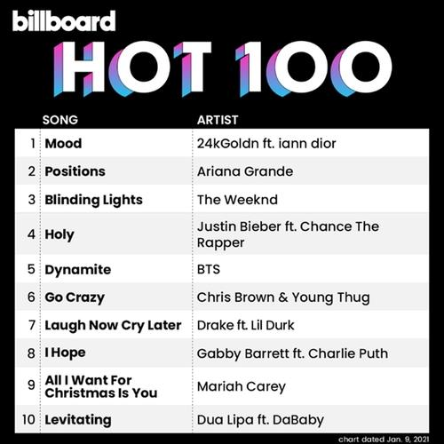
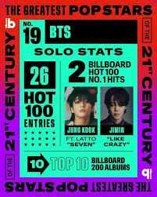

|  |
El éxito de BTSBTS es uno de los grupos más exitosos del K-pop y de la música global. Han liderado el Billboard Hot 100 y el Billboard 200, acumulando récords en ventas, streaming y visualizaciones en plataformas como YouTube y Spotify. Han ganado premios como los American Music Awards y recibido nominaciones a los Grammy. Sus giras llenan estadios en todo el mundo, como el Wembley Stadium, y sus fanáticos, ARMY, los han llevado a niveles sin precedentes. Además, han impactado socialmente con campañas como "Love Myself" y su discurso en la ONU, promoviendo mensajes de autoestima y diversidad. |
| El K-pop ha alcanzado una popularidad global sin precedentes, logrando importantes éxitos que han transformado la industria musical. Grupos y solistas del género han encabezado listas como el Billboard Hot 100 y el Billboard 200, rompiendo barreras para artistas asiáticos. En plataformas digitales, los videos musicales de K-pop acumulan miles de millones de reproducciones en YouTube, con récords de visualizaciones en 24 horas. Además, las canciones del género dominan listas de streaming en Spotify y Apple Music, alcanzando audiencias globales. Las giras mundiales son otro hito, con conciertos en estadios icónicos como el Wembley Stadium en Londres o el MetLife Stadium en Nueva York. Estas presentaciones confirman la creciente demanda internacional del género. |  |